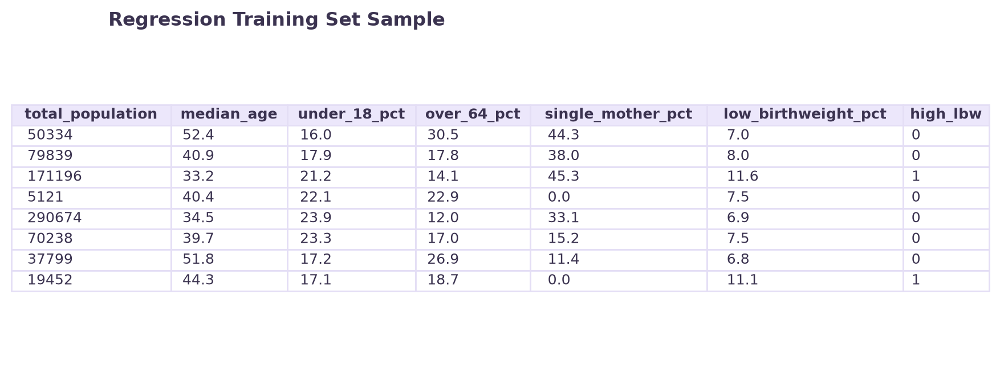
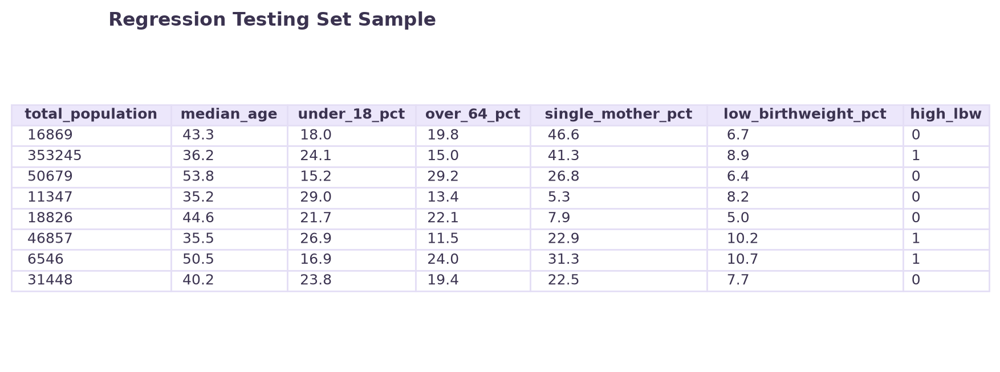
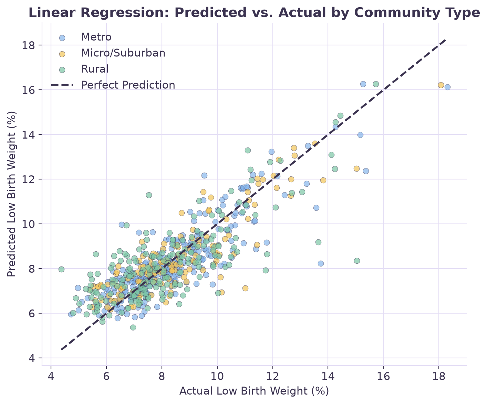
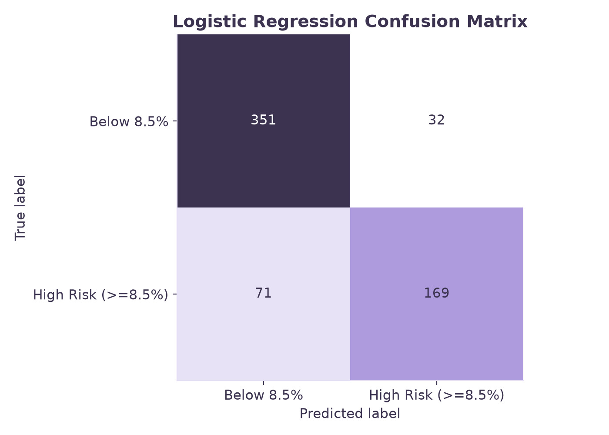

Overview
Regression is a type of supervised learning that models the relationship predictors and a target outcome. Linear Regression predicts a continuous numeric value. It does this by fitting a weighted linear equation across the predictors that minimizes the sum of squared errors between predicted and actual values. Linear Regression was specifically used to predict each county's exact low birth weight percentage from community socioeconomic, demographic, and healthcare access. Logistic Regression changes this linear framework for binary classification. It passes the linear combination of predictors through a logistic function to output a probability between 0 and 1, then assigns a class label using 0.5 decision threshold. In this case Logistic Regression calssifies counties as Below 8.5% (0) or High Risk at 8.5% and above (1). The model settings were chosen using 5-fold cross -validation on the training set.

Data
Prepared dataset: clean_maternal_infant_health.csv. Raw data: raw_data folder.
Because both Linear and Logistic Regression are supervised learning models they need labeled data. For Linear Regression, the model predicts the continuous low_birthweight_pct outcome directly. For Logistic Regression, that outcome was converted into a binary target variable (high_lbw) classifying counties as either Below 8.5% (0) or High Risk at 8.5% and above (1). The dataset of 2,491 counties was then split into two partitions, a training set containing 75% of the data (1,868 counties) and a testing set containing 25% of the data (623 counties). These must be disjoint to prevent data leakage and ensure the results are accurately showing the predictive power.

images/reg_data_split.png.

images/reg_train_sample.png.

images/reg_test_sample.png.Code
View the code here: regression.py
Python was used to conduct the Linear and Logistic Regression analyses. Primary packages used include pandas, numpy, scikit-learn, and matplotlib. An important note is that continuous predictors were standardized using StandardScaler.
Results
One the held-out testing of 623 counties, Linear Regression had an R-squared of 0.6884, an RMSE od 1.1204, and an MAE of 0.8256. Linear regression coefficients show which factors move the predicted rate most. Each additional teen birth per 1,000 females is associated with a rise of about 0.04% points in predicted low birth weight (coefficient= 0.0394), while each one % point increase in adult smoking is associated with a rise of about 0.07 points (coefficient= 0.0715), holding the other factors constant. Assitionaly the predictions tracked closely along the perfect predictions line across all community types. For Logistic Regression, the 5-fold cross-validation chose C=0.1 with 81,80% CV accuracy, and the fixed mdoel reached 82.34% test acrruacy in comparison to the 61.48% baseline. Overall it correctly classifie 349 Below 8.5% and 164 High Risk counties. When inspecting the standardized coefficients the median income has a coefficnent of -0.5365 (odd ratio = 0.5848), meaning a one standard deviation increase in country median income cuts the odds of falling into the High Risk group by 41.52%, holding all other factors constant. Logistic Regression cannot be compared directly with the Naive Bayes model from Part 3, because Naive Bayes predicted three risk tiers (best accuracy 59.23% against a 35.47% baseline) while Logistic Regression predicted a two-class label (82.34% against a 61.48% baseline). Relative to its own baseline, Logistic Regression improved by about 20.9% points and Naive Bayes by about 23.8, so the two models performed similarly well on their own tasks. The binary task is simpler, which explains much of the higher accuracy.


images/reg_pred_vs_actual.png.

images/reg_confusion_matrix.png.Conclusions
Both models confirmed that county-level socioeconmic and healthcare indicatros strongly predict infant health outcomes. They explained 68.84% of the variance in low birth weight rates and indetifying High Risk counties with 82.34% accuracy. Economic conditions like median income, aong with smoking and teen birth rates, stand out as key drivers of elevates county-level risk.